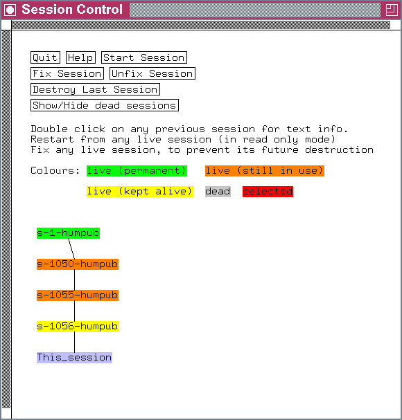

When the database starts up, this initial state is session 1. Every time the user gains write access, a new session (called This_session) is derived from the previous. Sessions are given sequential numbers. All initial additions before first save after the database was initialized will be stored in session 2. Changes to the new objects are newly added ones are stored in Session 3 etc.
A new session inherits all the data from its predecessor and it will also store modifications.
Objects can modified either interactively or by parsing ace-files. Until the user saves, all modified objects are held in a cache. When the database saves it copies those modified objects 'flushed' out of the cache and copied into the main-database.
Any user starting the database after that "save" will be able to 'see' the changes. Users who started the same database before that "save" occurred will not notice the changes and continue looking at the old data (if they happen to look at an object which was modified).
When objects are added or modified in a new session they are stored in a different place in the database. This way an process that has started before the save can still find the older objects in their original place, and the user can continue browsing the database.
There is however an overhead to this. If every old version of an object was kept in the database it would quickly grow out of proportion. This is why the database flushes older data out of the database in regular intervals to reclaim their disk space. That is a process known as garbage collection.
All changes to the database are always nicely bundled into a session. It is therefor
convenient to destroy older sessions, every time a new one is saved.
For reasons of data security a certain number of older sessions is kept alive.
This number is usually 2 or 3 and it can be configured for a given database
by adding this line to the file wspec/database.wrm:
SESSION_KEEP_ALIVE 2This configuration feature is available since version 4.7b, earlier versions will most likely use the number 2 by default. It may be configured to be bigger than that, but the smallest number allowed is 2.
A protection mechanism is available since version 4.7b to protect such session from deletion if another program is still looking at it. This mechanism is called a "read-lock". It tells the database if there are any programs still browsing through data from older sessions before destroying them.
When the database quits normally its read-lock is removed and its sessions must no longer be kept alive. If however, the database exited in an unexpected way (like a computer failure or a program crash) it's read-lock may remain in the database. For this reason, every read-lock which is older than a certain time-span is ignored by an updating program which checks which old sessions can be destroyed. In Acedb version 4.7b this 'grace_period' is fixed to 8 hours, but it may become configurable in future releases.

last edited: Dec 1998